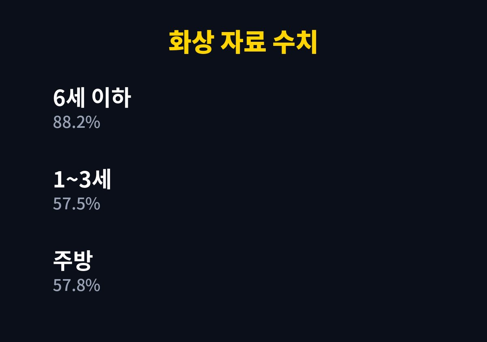
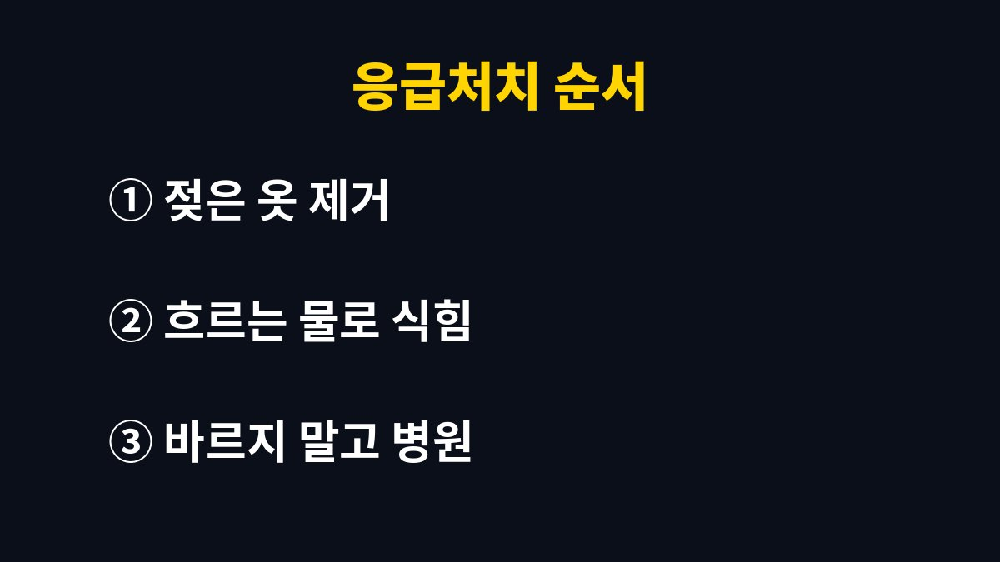

아이 화상 응급처치는 뜨거운 물에 젖은 옷을 가위로 벗기고, 흐르는 물로 식힌 뒤, 깨끗한 천으로 감싸 병원에 가는 순서로 한다.
한국소비자원 자료에서 만 14세 이하 어린이 화상사고는 2015~2017년 3년간 2,636건이었다.
겨울에는 가열식 가습기와 따뜻한 국물이 식탁 위에 늘어서 집 안 배치를 한 번 훑어볼 만하다.
한국소비자원 위해정보를 소개한 자료에서 2015~2017년 어린이 화상은 전체 화상사고 6,640건의 39.7%였다.
연령으로 보면 만 6세 이하가 88.2%이고, 1~3세 걸음마기만 57.5%였다.
집 안에서는 주방이 57.8%, 침실·방이 16.4%였다.
2012년 서울시 소방재난본부 자료에서는 3세 이하 화상 150명 중 128명(85.3%)이 국물·커피 같은 뜨거운 물 때문이었다.
같은 자료에서 3세 이하 140명(93.3%)이 가정에서 사고를 당했다.
자료가 오래되어 지금 수치와 다를 수 있다.
국물 그릇을 식탁 끝에 둔 채 어른이 잠깐 돌아선 사이 아이가 식탁보를 당기는 장면이 이런 사고의 전형이다.
한국소비자원이 2024년 2월 밝힌 조사에서 가열식 가습기 화상 92건 중 77.2%가 만 6세 이하였다.
접수 건수는 2020년 6건에서 2023년 10월까지 47건으로 늘었다.
조사한 가열식 가습기 21개 제품은 모두 넘어지면 수증기 토출구로 뜨거운 물이 나왔다.
밥솥형 17개 제품의 물 온도는 97~100℃였다.
수증기 최고온도가 60℃를 넘으면 주의 표시를 해야 하는데 2개 제품은 표시가 미흡했다고 한다.
만 1세 아이가 가습기를 잡아당겨 얼굴과 목에 화상을 입은 사례가 있었다.
선을 건드려 가습기가 떨어진 사례도 있었다.
그래서 가습기는 바닥이나 낮은 탁자 대신 아이가 닿지 않는 곳에 두고, 선이 늘어지지 않게 정리한다.
가습기를 켠 방에서는 아이가 자는 머리맡 가까이에 두지 않고, 물을 갈 때도 아이가 주변에 없는지 먼저 확인한다.
가열식이 아닌 방식의 가습기를 쓰는 집이라면 이 부분은 해당하지 않는다.
| 원인 | 자료에 나온 수치 | 바로 할 일 |
|---|---|---|
| 뜨거운 국물·커피 | 3세 이하 화상 원인의 85.3%(2012년 서울) | 식탁 가장자리에 두지 않기 |
| 전기밥솥 등 전열제품 | 화상 품목 중 18.4% | 아이 손이 닿지 않는 곳에 두기 |
| 정수기 온수 | 화상 품목 중 10.6% | 온수 잠금 기능 확인하기 |
| 가열식 가습기 | 가습기 화상 92건 중 77.2%가 6세 이하 | 높은 곳에 두고 선 정리하기 |
| 씻길 때 | 자료의 예방 안내 | 샤워기 대신 물을 받아 사용하기 |

전기 화상이라면 가장 먼저 플러그를 뽑거나 전류를 차단한다.
그다음은 아래 순서다.

인용한 자료에는 흐르는 물로 식히는 시간이 몇 분인지 적혀 있지 않았고 충분히라고만 되어 있었다.
병원에 가야 하는 화상 범위 기준도 없었다.
식히는 방식도 자료마다 표현이 달라 시간을 단정하지 않는다.
집에 있는 연고나 민간요법 재료를 먼저 꺼내 바르는 일은 자료가 모두 피하라고 한 부분이다.
아이가 크게 울거나 화상 부위가 넓다면 119에 전화해 상담원 안내를 따른다.
상처 정도가 걱정되면 소아청소년과나 화상 치료를 하는 병원에서 진료받는다.
오늘 집에서 가습기, 전기포트, 밥솥이 놓인 자리를 아이 눈높이로 한 번 살펴본다.
참고 자료: 한국소비자원 「어린이 화상사고 위해정보(CISS)」(서울시 행복드림 게재, 2026년 11월 확인) · 서울시 소방재난본부 「119구급대 이송 화상환자 분석」(서울시 서울톡톡 게재, 2026년 11월 확인) · 한국소비자원 「가열식 가습기 안전 실태 조사」(경향신문 보도, 2026년 11월 확인)
※ 2026년 기준 공식 자료를 바탕으로 정리한 일반 정보이며, 아이의 발달이나 건강에 걱정이 있다면 소아청소년과 등 전문가와 상담하길 바란다.